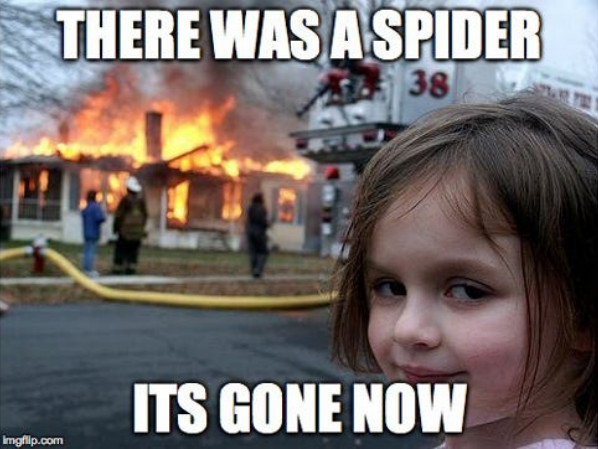
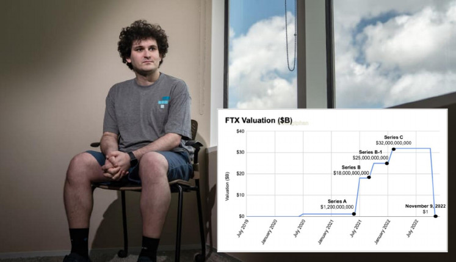

Für meine Ohana.
Dass sie nie wieder in die Matrix zurück findet.
VORWORT
Wie oft musste ich in meinem Leben schon hören "Du bist ein Träumer!". Aber sind es nicht erst die Träumer dieser Welt, die Visionen wahr werden lassen? Man muss nur aufwachen, um diese in die Realität umzusetzen.
Die Gebrüder Wright, mit ihrem Ehrgeiz wie die Vögel oben am Himmel zu fliegen, in Freiheit und endlicher Weite. Leonardo da Vinci, der seiner Zeit bei Weitem voraus war. Und noch viele andere könnte ich hier erwähnen.
Dieses Buch haben wir im wesentlichen Satoshi Nakamoto zu verdanken, denn von ihm ist das "White Paper". Von ihm haben wir die in einer Kette von Blöcken geschriebene Revolution.
Bitcoin ist nicht nur ein Traum oder eine Blase. Es ist Realität. Es wird alles verändern und die Welt von heute wird einst nur noch ein schlechter Traum gewesen sein.
Mögt Ihr nie aufhören zu träumen, aufzuwachen, zu erschaffen, zu lieben, zu leben und Eure Erfüllung finden.
30.07.2022
„Ich versuche deinen Verstand zu befreien, Neo. Aber ich kann dir nur die Tür zeigen. Hindurchgehen musst du alleine."
Morpheus @ Matrix
ÜBER DIESES BUCH
Die Beweggründe dieses Buch zu schreiben, sind ebenso vielfältig, wie die Erfahrungen, die Sie mit diesem Buch machen dürfen.
Eine Reise voller Fragen und Antworten. Antworten auf Fragen, noch bevor Sie überhaupt über diese Frage nachdachten. Jede einzelne hat mir Jahre und Stunden Kopfzerbrechen bereitet. Auf der Suche nach einer Antwort, präsentierte sich mir immer nur steht’s eine noch bedeutsamere Frage. Aber nie eine Antwort auf die Frage, die ich mir ursprünglich stellte.
Nun um es vorweg zu nehmen. Ich fand all meine Antworten und so viel mehr, auf einer anstrengenden Reise und der Selbsterkenntnis, das mein Ziel nur ein neuer Start ist.
Taler, Taler, du musst wandern Von der einen Hand zur andern. Das ist schön, das ist schön, Taler, lass dich nur nicht sehn!
Kinderlied 1.Strophe aus dem 15. Jahrhundert
Dieses alte Lied soll Ihnen etwas vermitteln. Was genau, werden Sie mit diesem Buch erfahren.
Nun wünsche ich Ihnen auf Ihrer Reise viel Spaß.
Warte, ehe ich es noch vergesse: Können Sie die Realität von der Traumwelt und der Matrix unterscheiden?
Warum tun meine Augen so weh?
Neo
Weil du sie noch nie benutzt hast.
Morpheus @Matrix
ÜBER DEN AUTOR
Ich bin nicht von Bedeutung. Aber ich hoffe, dass meine Erkenntnisse es sind.
Ich bin ein Mann aus einfachen Verhältnissen.
Ich habe weder studiert, noch Abitur.
Ich bin, wie so viele.
Ich wachse an jeder Erfahrung, an jeder Aufgabe, die mich erfüllt.
Ich komme und gehe mit der Zeit.
Ich bin der Hahn aus Robin Hood.
„Neo, wach auf"
Morpheus @Matrix
PROLOG
Wenn Sie ein Kind sind und sich etwas kostspieliges wünschen, werden Sie wohl wie ich den Spruch gehört haben: Wenn du hart genug dafür arbeitest, wirst du es dir eines Tages leisten können.
Mit der Zeit musste ich lernen, dass dieser Satz zwar stimmte, aber nur zum Teil.
Ich würde immer härter arbeiten müssen, um mir etwas leisten zu können.
Warum ist das so? Warum wurde meine Zeit immer bedeutungsloser, im Angesicht zu dem, was mir suggeriert wurde?
Die Menge an Geld, war doch dieselbe…?! Auf meinem Fiat-Geldschein steht nach wie vor dieselbe Zahl.
Wenn Sie als kleines Kind losgegangen sind mit einer Summe X, die Sie über einen Zeitraum gespart haben, die Ware jedoch um X% gestiegen ist, dann können Sie sich diese nicht mehr leisten.
Ein Kind versteht nicht warum, es wurde enttäuscht und fühlt sich belogen und betrogen.
Sie gehen nach Hause und sparen weiter, ohne das Wissen der alltäglichen Ausweitung der Geldmenge, welche ein stiller Diebstahl ihrer Zeit ist.
Sie bestehlen die Armen, Schwachen, die junge und ältere Generation und schauen einfach nur zu.
„Du kennst die Frage, genau wie ich.“
Trinity
„Was ist die Matrix?“
Neo
„Die Antwort ist irgendwo da draußen Neo, sie ist auf der Suche nach dir und sie wird dich finden, wenn du es willst“
Trinity @Matrix
EINLEITUNG
Als ich mich im Jahre 2020 zum ersten Mal mit Bitcoin näher befasste, stellte ich fest, dass dieses „Magic Internet Money“ immer noch lebt und zwar seit 11 Jahren. Somit kaufte ich meinen ersten UTXO.
Ich hatte durch unsere Regierung alle meine Pläne, mein Beruf, mein ganzes Leben, entzogen bekommen.
Ich dachte mir: Nun ja, dir geht es ja nicht besser, als anderen Menschen in dieser Situation. Da ich Erspartes hatte, wie so viele von uns, die ihre Bedürfnisse und ihr Kaufverhalten unter Kontrolle haben und nicht jeder Versuchung nachgeben, die durch unsere Medien in uns geweckt werden.
Jedoch merkte ich schnell, das mein Geld ohne weitere Arbeit weniger werden würde. Viel schneller als das dies meinen Konsum des gespartes Geldes entsprach.
Ich realisierte, dass es fast allen so geht, dass es immer und immer wieder in der Geschichte genau so passiert ist.
Ich wollte wissen, ob es Zufall ist, dass ich arm bin oder ob ich wirklich selbst daran Schuld bin? Arbeite ich zu wenig oder wird meine Leistung nur nicht entsprechend honoriert?

Dieses Buch besteht aus 5 Teilen, die das Grundwissen vermitteln sollen, von:
- Zeit
- Physikalische Leistung
- Geld
- Realität/Matrix
- Bitcoin
Jeder Teil ist Teil von etwas ganzem. Es erzählt die Geschichte von Blöcken und Ketten, von einer einsamen Insel, einem Diebstahl und einem Virus. Film und Musik sind Analogien zur unserer Realität. Sie sind der rote Faden in meinem Werk.
Mit der Zeit fügen sich Teile zusammen, Sie verarbeiten diese und fällen ihren Entschluss, richtig?
Aber was ist, wenn eben diese Teile manipuliert sind? Lassen Sie uns gemeinsam die Antwort finden.
1. DIE ZEIT
Die Zeit ist allgegenwärtig - t
Dimension, die Ereignisse von der Vergangenheit in die Zukunft ordnet.
@wikipedia
„Wann?“
Neo
„Du glaubst du bist im Jahre 1999, eher wahrscheinlich ist aber 2199. Ich kann Dir nicht genau sagen, in welchem Jahr wir leben, da wir es ehrlich gesagt nicht wissen“
Morpheus @Matrix
Wir kommen alle, alle in den Himmel
Kinder, ich weiß, ihr habt es nicht leicht, bis ihr im Leben das „Soll“ erreicht. Was ihr getan, steht im Buche der Zeit, ob ihr nun Schmitz oder Müller seid. Alle, die zahlen die sauber geführt, werden am Ende addiert. Doch diese Rechnung hat kein Verdruss, sie bringt uns alle Plus.
Jupp Schmitz - 1.Strophe 1952
1.1. WAS IST ZEIT
Die Zeit ist eine physikalische Größe. Das allgemein übliche Formelzeichen ist t, ihre (SI-Einheit) ist die Sekunde s. Im Einheitssystem ist die Zeit eine von mehreren Basisgrößen.
Die Zeit beschreibt die Abfolge von Ereignissen. Sie hat also eine eindeutige, nicht umkehrbare Richtung. Mit der Hilfe der physikalischen Prinzipien der Thermodynamik kann diese Richtung als Zunahme der Entropie, d.h. Der Unordnung in einem abgeschlossenen System, bestimmt werden.
Aus einer philosophischen Perspektive beschreibt die Zeit das Fortschreiten der Gegenwart von der Vergangenheit kommend und zur Zukunft hinführend.
Nach der Relativitätstheorie bildet die Zeit mit dem Raum eine vierdimensionale Raumzeit, in der die Zeit die Rolle einer Dimension einnimmt. Dabei ist der Begriff der Gegenwart nur in einem Punkt definierbar, während andere Punkte der Raumzeit, die weder in der Vergangenheit noch in der Zukunft dieses Punktes liegen, als „raumartig getrennt“ von diesem Punkt bezeichnet werden.
In der Philosophie fragt man seit jeher nach dem „Wesen der Zeit“, was auch zu Themen der Weltanschauung führt.
Für die physikalischen, die Bio- und Humanwissenschaften ist die Zeit ein zentraler, auch messtechnisch erfassbarer Parameter, u.a bei allen bewegten Körpern (Dynamik; Entwicklung), in der Chronobiologie oder der Zeitsoziologie.
Die Psychologie untersucht die Zeitwahrnehmung und das Zeitgefühl.
Die Ökonomie betrachtet die Zeit auch als Wertgegenstand.
In de Sprachwissenschaft bedeutet „Zeit“ die grammatische Form der Zeitwörter, das Tempus.
Präteritum
Präsens
Futur
Große Uhren machen Tick Tack
Große Uhren machen:
Tick Tack Tick Tack
Kleine Uhren machen:
Ticke Tacke Ticke Tacke
Die kleinen Taschenuhren machen:
Ticke Tacke Ticke Tacke Ticke Tacke
Ticke Tacke
Und die große Turmuhr die schlägt:
Bim Bam Bim BamKinderlied von Karl Karow, um 19. Jahrhundert
1.2. VON ANBEGINN DER ZEIT
Wissen Sie, warum wir in unserer heutigen Zeitrechnung im Jahre 2022 leben?
Ich durfte mit Erschrecken immer wieder miterleben, wie viele Menschen, diese Antwort nicht wissen. Weltweit feiern Menschen jedes Jahr Sylvester (welcher Sinn, sich mir leider noch nicht entschlossen hat), ohne zu wissen, was erst zum Anbeginn unserer Zeitrechnung geführt hat: Das Jahr 0.
Zeitstrahl
Es ist das Jahr, in dem schätzungsweise ein gewisser Herr Jesus Christus geboren wurde. Wer oder was er war, spielt für Sie in diesem Buch weniger eine Rolle.
Die Erde braucht ein Jahr, um die Sonne einmal komplett zu umrunden. Ja, genau genommen braucht sie: 365 Tage; 5h; 48min; 46sec.
Welches das Schaltjahr alle 4 Jahre erklärt, damit wir nicht jedes Jahr knapp 6h vom astronomischen Zeitalter abweichen.
Der Mensch aber lebt im hier und jetzt, er lebte in der Vergangenheit und er lebt in der Zukunft.
Um es vereinfacht zu sagen: Sie lebten 2021. Sie leben jetzt gerade da, wo sie diese Zeilen lesen und leben noch, wenn dieser Satz in ihrer Wahrnehmung beendet ist.
Oder Sie leben in Deutschland und Ihr Kind in Australien, aber ihre Frau in Amerika. Wo existieren Sie in der Zeit?
Wichtig für Sie ist, in welchem Zeitraum Sie sich befinden, dass Sie Zeiträume richtig einschätzen können und verstehen, dass diese begrenzt und in ihrer Einzigartigkeit nicht reproduzierbar sind. Jedes Jahr, jeder Moment ihres Lebens. Nichts ist endlos, nur die Zeit selbst.
1.3. DIE UHRZEIT
Die Uhrzeit ist die Angabe zu einem bestimmten Zeitpunkt.
Die Zeitangabe wird dabei unterteilt in Stunden, Minuten und Sekunden.
Daher vergehen 24 Stunden, bis die Erde wieder dieselbe Ausrichtung zur Sonne hat wie am Vortag.
Wir messen für einen Tag 24h, wobei es eigentlich 23 Stunden und 56 Minuten sind.
1.4. DIE BLOCKZEIT
Die Blockzeit, bessere bekannt als die Blockhöhe, ist die unter den Bitcoinern verwendete Zeitangabe, die Ihren Beginn mit Satoshi Nakamoto fand. Am 03.01.2009 wurde der erste Block von ihm gemined/gefunden.
Die aktuelle Blockzeit, während ich gerade diese Worte zu Papier bringe, ist 752046.
Es sind 6 Zahlen, die voller unveränderbaren, Transparenten Informationen stecken.
Bitcoin basiert auf der Blockchaintechnologie, welche nichts weiter als alle Daten, Informationen oder Transaktionen in chronologischer Reihenfolge speichert.
Schätzungsweise wird alle 10 Minuten ein neuer Block gefunden und an die Kette von Blöcken hinzufügt.
Dies geschieht in die Richtung nach vorne wie das Ticken eines Uhrzeigers. TIK TOK der nächste Block, wie die Uhrzeit.
Folgendes Beispiel:
Sie befestigen einen Block an die Decke eines Zimmers. An diesen Block (der Genesis Block) befestigen Sie 5 Kettenglieder, dann wieder einen Block und so machen Sie es immer weiter. Jeder Block ist nummeriert wie beim Domino und es passt immer nur eine bestimmter Block.
Ich schätze das Sie pro Block 10 min. brauchen werden, je nachdem wieviel Leistung Sie erbringen können. Wenn das Holz, welches Sie als Block benutzen, nicht so hart ist, lässt es sich auch mal einfacher bearbeiten. Woher diese Blöcke eigentlich kommen, darauf werden wir später eingehen.
Zunächst einmal haben Sie eine physische Kette von nummerierten Blöcken. Gratulation. Eine Kette von Blöcken hat einen Anfang aber theoretisch ggf. kein Ende. Und um nun zu wissen ,„Wo“ wir gerade sind, zählen wir die Blöcke ab den 1. an der Decke hängenden. Sie können nicht einfach den 3. oder 5. Block entnehmen, ohne die Kette von Blöcken zu zerstören.
Damit die Blockhöhe“ in diesem von mir gewählten Beispiel mehr Sinn ergibt, empfehle ich einen Handstand. Aus dieser Sichtweise lässt es sich auch zählen.
Guten Abend, gute Nacht
Guten Abend, gute Nacht,
Mit Rosen bedacht,
Mit Näglein bestickt,
Schlupf unter die Deck:
Morgen Früh wen Gott will,
Wirst du wieder geweckt.Johannes Brahms, 19. Jahrhundert, Strophe 1
1.5. DIE WAHRNEHMUNG UNSERER ZEIT
Wie nimmt der Mensch seine Zeit auf Erden eigentlich wahr? Wann und warum ändert sich diese Wahrnehmung?
Unser Leben ist von Anfang bis Ende mit einer durchschnittlichen Lebenserwartung von 83,4 Jahren für weibliche und 78,6 Jahren für das männliche Geschlecht zu erwarten. In all dieser Zeit, steht Ihnen eine unbekannte X an physikalischer Leistung zu Verfügung. Ebenso können Sie auch nur eine begrenzte in Eigenleistung erbringen.
Unsere Lebenszeit ist in 5 Phasen unterteilt, die sogenannten Lebensabschnitte.
Der Begriff Lebensabschnitt bezeichnet jeweils einer dieser Phasen, der nachgeburtlichen Entwicklung des Menschen.
- Geburt 0-2
- Kindheit 3-11
- Jugend 12-19
- Erwachsen werde/sein 18-69
- Senioren 70+
Wir nehmen jeder dieser Phasen absolut unterschiedlich war. Unsere komplette Lebensplanung in unserer heutigen zivilisierten Gesellschaft richtet sich nach ihr. Jede Phase sollte respektiert, genutzt und honoriert werden ,um die Würde des Menschen zu wahren.
Erkennen Sie sich im folgenden Beispielen wieder?
Geburt bis Erwachsen werden:
- leben
- lachen
- lernen
- spielen
- träumen
- sorgenfrei
- Genuss
Vom Erwachsenenalter bis zum Senior:
- "9 to 5" Montag bis Freitag oder Sonntag
- In der Freizeit berauschende Mittel zum Genuss konsumieren
- Aufgehört zu lernen
- frustriert, wütend, beschwerend
- arbeiten, Schulden abzahlen
Vom Senior bis zum Tod:
- müde, erschöpft
- frustriert, wehmütig, nostalgisch
- der Wunsch nach mehr Zeit oder die Zeit zurückdrehen zu können
- Warten auf den Tod
Für mich klingt dies nicht wirklich nach Erfüllung oder der Sinn des Seins.
Zeit lässt sich nicht sparen, nur einsparen. Ihre ist endlich, sie ist begrenzt und eine unbekannte X, ebenso wie die allen Lebens und die damit einhergehende Leistung physikalischer Arbeit.
Zufall oder Schicksal?
Ihre Vergangenheit ist gewiss! Ihre Zukunft, eine Annahme! Ihre Gegenwart, das jetzt! Zeit ist relativ.
Wer soll das bezahlen?
Wer hat das bestellt? Wer hat soviel
Pinkepinke?
Wer hat soviel Geld?Lied von Jupp Schmitz
Wer soll das bezahlen? Refrain von 1949
1.6. DIE ZUKUNFT ODER DIE GESTOHLENE ZEIT UNSERER KINDER
Wir wissen jetzt was Zeit, was ein Zeitraum und was die die Phasen unseres Lebenszyklus sind. Nun kommen wir zu dem, was wir „Schulden“ nennen.
Schulden haben Sie dann, wenn Sie eine gewisse Summe X an Medium/ Währung nicht selbst aufbringen können und sich diese von einer 3.Partei „leihen“ bzw. borgen müssen. Sie benutzen also fremdes Kapital, daher der Begriff Fremdkapital.
Schulden können Sie machen als:
- Privatpersonen
- Geschäfte/Unternehmen
- Staat
Folgendes Beispiel:
Ich verkaufe Ihnen dieses Buch, für 1 Stunde ihrer Zeit als Medium der Währung. Ich bevorzuge alles in Stunden (h) vom Arbeitsaufwand umzurechnen. Es zeigt Ihnen am ehesten die Realität.
In unserem Beispiel haben Sie aber nur 30 min. Zeit. Sie möchten aber trotzdem dieses Buch. Sie werden sich die Zeit, die sie zusätzlich benötigen, von jemand anders leihen müssen.
Aber Sie sind alleine, was nun? Die Lösung ist einfach: Etwas Magie „heute back ich, morgen brau ich, übermorgen schließen wir eben einen Generationenvertrag" und die fehlenden 30min, sowie alle deine Zeitschulden werden von deinen Kindern und Kindeskindern bezahlt werden.
Du kannst dich also noch in Ruhe weiter umsehen und Schulden machen, so viele wie du willst. Warum an morgen denken und wenn diese Generation ein Problem damit haben sollte, bekomme ich es ja nicht mit, denn meine Zeit ist um.
Sagen sie mir ehrlich, ist das fair? Können Sie eine solch weitreichende Entscheidung überhaupt treffen? Ist das nicht kriminell?
Wenn Sie der Staat sind, ist es natürlich legitim. Sie nennen es Steuern, welche nichts weiter als Raub sind und sollen, wie das Wort schon sagt, uns steuerbar oder gefügig machen.
Verkauft als Einigkeit, Recht und Freiheit - welche Ironie.
Wir nennen es nur eben “Staatsschulden“. Und jetzt denken Sie bitte an jede Steuerverschwendung, die Ihnen einfällt. Sie ist sehr wahrscheinlich noch nicht abbezahlt. Ihr Kind wird es schon machen, ob es das will oder nicht. Aber wenn das alle machen und die versprochenen Rückzahlungen nicht erfüllt werden, dann bricht alles in sich zusammen wie ein Kartenhaus.

Kinder haften für ihre Eltern, nicht die Eltern für ihre Kinder, in der Matrix.

„Das ist schon bald nicht mehr“.
Trinity@Matrix
1.7. BEISPIEL: FALSCHE ZEIT
Artikel vom 28.08.2022 Business Insider
Autorin: Venentina Resetoris
Was denken sie zuerst? Es ist handelt sich um die Gegenwart. Die Headline des von mir gewählten Beispiel soll ihnen folgendes suggerieren:
- Ich kann mir noch etwas Luxus leisten, auch wenn Sie sich keine reguläre Immobilie leisten können.
- "baut und nicht baute" - also ist es aktuell.
- "kostet" - wieder die Gegenwart.
- "nur" 55.000€ - es ist nicht viel Geld, was sie dafür erbringen müssen.
Nur die bloße Annahme, dass sie auch 55.000€ bezahlen würden, ist aber falsch. Aber warum ist das so?
Nun ja, Zeiten ändern sich. Ebenso wie die Summe, die wir erbringen müssen, um bestimmte Dinge zu erwerben.
Das erwähnte Tiny House steht in Australien und wurde dort von den Eignern in Eigenleistung erbaut. Matt und Lisa schätzen ihre Kosten inzwischen auf 80-90.000 Australische Dollar.
Quelle: YouTube
Titel: Ultra Tiny House will Blog up your Mind
Datum: 05.04.2019
Kanal: Living Big in a Tiny House
Nur die kleinste Veränderung der Verhältnisse oder der Dimensionen kann unseren Verstand täuschen. Achten sie immer auf die Zeit!
Sogar das Foto wurde von der mir aufgeführten ursprünglichen Quelle übernommen.
Die Quellenangabe der Autorin wurde im Artikel bewusst nicht genannt.
Aber warum?
Copy and Paste, erscheint von immer mehr Journalisten und Medien die investigative Arbeit zu ersetzen.
Die einfachsten Dinge falsch ausgeführt, können ungeahnte Konsequenzen herbeiführen, welche sich nur für Sie als Individuum, für eine bestimmte Gruppe oder für alle als Gemeinschaft auswirken.
Sein Sie sich dessen steht’s bewusst, dass Ursache und Wirkung ein essenzieller Teil unseres Lebens sind.
Falsche Erwartungen, das Wecken von unerfüllbaren Träumen, ist nichts anderes als der Raub an unserer Zeit.
Sie merken, die Dinge vermischen sich all zu schnell und es ist leicht, Dinge so zu mischen , wie ich sie gerne möchte, dass sie verstanden werde sollen.
Ist ein Bedürfnis erst einmal geweckt worden, will es in der Regel auch gestillt werden.
Denken sie darüber nach, durch was ihr Konsumverhalten beeinflusst wird, ob Sie in Wirklichkeit nur ein Kompromiss gefunden haben, vom Haus mit Garten zum Bauwagen auf dem Parkplatz, welch ein Luxus.
Lassen sie sich nicht für dumm verkaufen. Ich frage Sie, träumen Sie nicht von einem normalen Haus mit Garten, einer Familie, einer Arbeit die Ihnen den normalen Mittelstand ermöglicht? Wollen Sie wirklich minimalistisch leben, oder zwingt Sie dazu Ihre wirtschaftliche Lage?
„Willkommen in der Wüste des Realen“
Morpheus @Matrix
2. DIE PHYSIKALISCHE LEISTUNG
\[ P = \frac{W}{At} \]
P = Leistung
W = Arbeit
At = verstrichene Zeit
„Ich weiß warum du hier bist, Neo. Ich weiß was du machst, wieso du alleine wohnst und wieso du Nacht für Nacht vor deinem Computer sitzt. Du suchst nach ihr.“
Trinity @Matrix
2.1. DEFINITION
Die Leistung als physikalische Größe bezeichnet die in einer Zeitspanne umgesetzte Energie bezogen auf die Zeitspanne.
Ihr Formelzeichen ist meist P (englisch Power), ihre SI-Einheit das Watt mit dem Einheitszeichen W.
Im physikalisch-technischem Zusammenhang wird der Begriff Leistung in verschiedenen Bedeutungen verwendet.
- Als installierte oder maximal mögliche Leistung (Kennzeichnung eines Gerätes oder Anlage; auch Nennleistung genannt).
- als tatsächliche Leistung in einer Anwendung
- Die zugeführte Leistung
- Die im Sinne der Aufgabenstellung abgegebene Leistung
Die Leistungsaufnahme und die für eine bestimmte Anwendung nutzbringende Leistungsangaben können je nach Wirkungsgrad bzw. Abwärme erheblich voneinander abweichen.
2.2. PROOF OF WORK
Ins Deutsche übersetzt: Arbeitsnachweis; eine Bescheinigung der aufgebrachten Leistung für einen gewissen Zeitraum.
Proof of work ist der Konsens-Algorithmus, d.h. die Übereinstimmung des Verfahrens zur schrittweisen Umformung von Zeichenreihen in einen Reihenvorgang nach einem zuvor fest programmierten Schema, der zum Finden der Blöcke im Bitcoin Netzwerk zur Anwendung kommt.
Es dauert etwa 10 min. ehe ein Block gemined/ gefunden wird. Alle Miner, egal wo auf der Erde, versuchen zeitgleich ein kryptographisches Rätsel zu lösen.
Am Besten sie stellen es sich als „Bingo“ vor. Sie haben jetzt z.B. eine Zahl, nehmen wir doch wieder die aktuelle Blockzeit in der ich gerade schreibe:
752.178
Jeder Teilnehmer, der nun mitspielt, erfährt folgende Informationen: 6-Stelliger Code, Zeit 10 min.
Wer die Zahl errät bekommt 6,25 € als Belohnung. Die Teilnehmerzahl ist unbegrenzt. Sie haben unendliche Versuche. Um die Zeit zu gewährleisten, passe ich die Schwierigkeit je nach Zeit an, indem ich 1 oder mehrere Zahlen preisgebe oder wieder verdecke.
Nach etwa 10 min. wird die Person, die diese Zahl als erstes gefunden hat, belohnt. Mit der Zahl, die ein Block ist und die Belohnung von 6,25€.
Wo kommt der Block hin? Richtig, an die Kette. Sie merken, alles fügt sich so langsam zusammen.
Die Bitcoin Blockchain ist also nur ein Speicher, auf der ein Nachweis von Energie, Zeit, physikalischer Leistung erbracht wird. Sie wird auch „Timechain“ genannt.
In der Bitcoinszene nennen wir diesen Vorgang Mining, das Finden von Blöcken.
Auch Sie sind das Ergebnis von „Proof of work“ Ihrer Vorfahren.
„Ich habe dich gesucht Neo, ich weiß nicht, ob Du dir das ich dir zeigen will, schon bereit bist, aber leider bleibt uns keine Zeit“
Morpheus @Matrix
Mein Block
Meine Stadt,
Mein Bezirk,
Mein Viertel
Mein Gegend.
Meine Straße,
Mein Zuhause,
Mein BlockAuszug: Mein Block von Sido 2004
Wissen ist der Schlüssel
3. WAS IST GELD?
„Jedwede Art von Säugern auf diesem Planeten entwickelt instinktiv ein natürliches Gleichgewicht mit ihrer Umgebung.
Ihr Menschen tut dies nicht. Der Mensch ist eine Krankheit, Das Geschwür dieses Planeten.“
Agent Smith @Matrix
3.1. DEFINITION
Nun Geld an sich ist nur ein Medium - es ist. Geld trifft weder Entscheidungen, noch hat es andere Aufgaben als ein Medium zum Tausch zu sein. Es wird in folgende zwei Kategorien unterschieden, gutes Geld und schlechtes Geld.
Doch woran machen wir nun fest, welches der beiden nun welches ist? Nun, wir schreiben den Dingen ihren dementsprechenden Wert von Zeit und physikalisch erbrachter Leistung zu, meistens zumindest. Um den Wert zu ermitteln, nutzt man das „Stock to Flow“ Modell. Es beschreibt die Härte beziehungsweise Knappheit eines Gutes auf Hinblick auf die Zeit, den realen Wert. Wie der Mensch diese wahrnimmt, ist eine andere.
In der Geschichte des Geldes ist es erwiesen, dass Geld absolut alles sein kann, worauf wir uns einigen können: Steine, Muscheln, Silber, Gold, Münzen aus anderen Metallen, Papier oder eben Bitcoin.
Jedes uns bekannte von Menschen geschaffene Geld hatte eine bestimmte Lebensdauer sowie Lebenserwartung aufgrund ihrer zuvor geschaffenen Grundlage oder durch den Eingriff und der Veränderungen dieser.
Kommen wir nun zu den zwei Kategorien von Geld, dem guten und dem schlechten.
Gutes Geld hat folgende Eigenschaften:
- limitiert
- konserviert Kaufkraft
- entwertet nicht
- nimmt an Wert zu mit der Zeit
- Ressourcen werden gespart und sinnvoll verwendet
- Langlebigkeit
- effizient
- Wohlstand entsteht
Schlechtes Geld hat folgende Eigenschaften:
- unlimitiert
- Verlust der Kaufkraft
- entwertet
- verliert also an Wert mit der Zeit
- Ressourcen werden unnötig abgebaut/eingesetzt und verschwendet
- kurzlebig
- ineffizient
- Verarmung der Gesellschaft
Es ist nicht das Geld, womit der Mensch nicht umgehen kann, sondern die Zeit.
3.2. WARUM NUTZEN WIR GELD?
„Warum?“
Neo
„Weil du weißt was Dich erwartet, Neo. Du kennst die Welt da draußen.“
Trinity @Matrix
Da wir nun wissen, was Geld ist, kommen wir nun zu dem, warum wir es brauchen.
Die Antwort auf diese Frage ist recht simpel. Können Sie sich noch an das Beispiel der Schulden erinnern, wo ich ihnen erklärte, dass diese auch Zeit sind und der Preis für dieses Buch 1 Stunde beträgt?
Nun Zeit als Medium für Geld, ist eine eher unpraktische Angelegenheit. Oder wollen sie etwa bei jedem Händler erst arbeiten, ehe der ihnen eine Ware verkauft oder eine Dienstleistung erbringt? Unmöglich.
Sie merken es wäre abstrus, Zeit als Medium für Geld zu verwenden, außer der Film „In Time-Deine Zeit läuft ab“ wird Realität, ein Albtraum den jeder fürchten sollte. Der Film ist jedoch empfehlenswert.
Wie würden Sie Zeit wechseln oder immer genau ihrer Wertigkeit gegenüber gerecht werden, wenn Sie doch für jeden von uns einen individuellen Wert hat?
Wir benötigen also etwas worauf alle Zugriff haben. Etwas, was wir alle verstehen, womit wir rechnen können und worauf wir uns einigen und vertrauen können. Geld ermöglicht es uns Dinge eine Wertigkeit zuzuschreiben.
Ob diese zum Teil angebracht ist oder nicht, ist eine andere Frage. Geld soll uns nur dienen und ist ein Mittel zum Zweck. Also eine Notwendigkeit, mehr jedoch nicht.
Es soll uns ermöglichen Transaktionen durchzuführen und Waren oder Dienstleitungen zu bepreisen. Es dient uns, nicht wir ihm. Schließlich haben wir nicht immer Zeit oder ewig Zeit.
Geld
Substantiv, Neutrum
3.3. WOZU ALL DAS VIELE GELD?
„Hattest du jemals einen Traum Neo, der dir komplett real erschien? Was wäre, wenn du unfähig wärst wieder aufzuwachen Neo? Wie würdest du den Unterschied zwischen Traumwelt und realer Welt erkennen?“
Morpeus @Matrix
Zur aktuellen Blockzeit 752.313 während meiner Recherche ergab sich mir folgendes Ergebnis, welche die Geldmenge in drei Kategorien unterteilt.
Die Geldmenge M1 : 11,3 Milliarden €
Umfasst überwiegend das Bargeld und Sichteinlagen (bei der Bank liegende Geldbeträge, die täglich ausgezahlt werden können}.
Die Geldmenge M2: 14,7 Milliarden €
Sie umfasst überwiegend Spareinlagen, wie z,B den Bausparvertrag.
Die Geldmenge M3: 15,5 Milliarden €
Sie umfasst Kredite sowie Umsätze aus den Wertpapiergeschäften.
Soweit die Daten von Statista stimmen, so ergab sich Ende Dezember 2021 eine Summe von 41,5 Milliarden Euro.
41.500.000.000.000€
Diese Summe ist seitdem weiterhin expansiv gestiegen und sie wird es auch weiterhin. Es werden weiter Schulden aufgenommen, der Wachstum darf niemals aufhören, koste es was es wolle. Die Menge an Bargeld M0 etwa 1,4 Milliarden kommt da noch hinzu.
Wenn Sie mehr konsumieren als Sie erwirtschaften, machen Sie Schulden, welche sich mit der Zeit anhäufen.
Sie wachsen nur so lange, wie Sie sich über Wasser halten können, bis zu einem gewissen Punkt, an dem sich Schulden überhäufen und Sie kein neues frisches Kapital mehr bekommen.
Schulden wollen bedient werden, der Zahlungsausfall ist unausweichlich, man ist Insolvent. Dies gilt für Banken, Privatpersonen, Staaten.
„Ich weise darauf hin, dass es nicht automatisch eine Insolvenzwelle geben muss. Aber es kann sein, dass sich bestimmte Geschäfte nicht mehr rentieren und die dann eingestellt werden. Vielleicht werden sie später wieder aufgenommen, das kann ja sein. Also, das ist dann ja keine klassische Insolvenz.“
09/22 Robert Habeck bei Maischberger
Auch wenn das unser Bundeswirtschaftsminister Robert Habeck, etwas anders sieht in seiner Welt.
3.4. VERMÖGENSWERTE
Was versteht man unter Vermögenswerte beziehungsweise Vermögensklasse?
Als Vermögensklassen werden bezeichnet: Immobilien, Aktien, Rohstoffe wie z.B Bitcoin, Edelmetalle, Fonds, Kunst, Antiquitäten, Oldtimer, Uhren, Schiffe, Firmenbeteiligungen usw.
Allem, was dem Menschen als nützlich, wichtig oder einzigartig genug erscheint, bekommt einen für sich stehenden Wert, welcher durch das Medium Geld interpretiert wird. Jede einzelne für sich lässt sich als Vermögensklasse bezeichnen und jede ist auch Geld, so können Sie ihr Vermögen nach Belieben diversifizieren.
Aber:
Vermögen ist eine Illusion, da Sie nicht wissen, wieviel Zeit Ihnen noch bleibt oder wieviel Zeit der jeweiligen Vermögensklasse.
Sie können mit nichts Zeit kaufen. Vermögen, Wohlstand und Reichtum ermöglicht uns nur ein möglichst komfortables Leben. Materielle Dinge sind also jeweils nach ihrem „Stock to Flow“ Zeitanlagen und keine Wertanlagen.
Ihr Reichtum an materiellen Dingen kann durch Regierungen konfisziert, durch die Allgemeinheit/Gesellschaft entwertet oder überwertet werden.
Die bloße Annahme, dass Sie selbst alleine maßgeblich Einfluss auf Ihren Reichtum haben, kann also nur zum Teil zugestimmt werden. Denn es ist die Gesellschaft, die Entscheidung eines jeden Einzelnen und Sie sind ein Teil davon.
So wie Bitcoin, es bekommt sein Wert durch Sie zugeschrieben, nur dass es nicht konfisziert werden kann. Der Bitcoin verlässt nie sein Netzwerk bzw. die Timechain über die physische Welt.
Was Ihre Zugangsdaten und Ihre Verifizierung angeht, ist es wie bei allen Dingen. Lassen Sie Pin und Karte offen neben den Automaten liegen, kann sich jeder von Ihrem Konto bedienen. Ähnlich wäre der Zugriff die UTXO möglich.
Wie viel Geld gibt es auf der Welt?
Was ist was wirklich Wert?
Wie viel Physikalische Leistung ist maximal vorhanden?
Warum ist alles durch 21 teilbar?
Und was zur Hölle ist UTXO?

Anlageklassen nach Marktkapitalisierung in US-Dollar (2021)
Quellen: Morningstar, Finanzen.net, savlillis.com, CoinMarketcap
Via blockchainwelt.de
3.5. WER MACHT GELD?
„Sie haben ein Problem mit Autorität, Mr. Anderson. Sie halten sich für etwas besonderes, jemanden für den keine Regeln gelten Aber da liegen Sie definitiv falsch. Diese Firma gehört zu den besten Software-Produzenten der Welt, da sich jeder Angestellte als Teil eines ganzen sieht. Hat einer dieser Angestellten ein Problem, hat die Firma ein Problem.“
Agent Smith @Matrix
Das Währungsmonopol
Als Währungsmonopol bezeichnet man das gesetzliche Monopol auf die Emission einer Währung. Mit einer Monopolisierung wird ein gesetzliches Zahlungsmittel geschaffen.
Emittent dieser Währung ist dabei heute in demokratischen Ländern mit marktwirtschaftlicher Wirtschaftsordnung im Regelfall eine Notenbank, der dieses Recht vom Staat übertragen wurde. Dabei bekommt diese meist auch das Recht zugestanden, die Geldmenge des gesetzlichen Zahlungsmittels entsprechend gesetzlicher Vorgaben eigenverantwortlich zu regulieren. Eine gesetzliche Ordnung hinsichtlich Gestaltung und Prägung von Münzen und Banknoten existiert unabhängig davon.
Quelle: @Wikipedia
3.6. DER EURO
Oder der „Teuro“?
Der Euro ist laut Art.3 Abs.EUV die Warnung der europäischen Wirtschafts- und Währungsunion, eines Art. 127-144 AEUV geregelten Politikbreis der Europäischen Zentralbank emittiert und fungiert als gemeinsame offzielle Währung in 19 EU-Mitgliedstaaten, die zusammen die EUROZONE bilden, so wie in sechs weiteren europäischen Staaten.
Nach dem US-Dollar $ ist der EURO die wichtigste Reservewährung der Welt. Der Euro wurde am 01.01.1999 als Buchgeld und und drei Jahre später als Bargeld eingeführt. Damit löste er die nationalen Währungen als Zahlungsmittel ab.
Die Euromünzen werden von den nationalen Zentralbanken der 19 Staaten des Eurosystems sowie von derzeit vier weiteren Staaten mit jeweils landesspezifischer Rückseite geprägt. Die Eurobanknoten aus verschiedenen Ländern unterscheiden sich bei der ersten Druckserie nur durch den Buchstaben an der Stelle der Seriennummer, der angibt im Auftrag welcher nationalen Zentralbank der Schein gedruckt wurde.
Bei der zweiten Druckserie ab 2013, die höheren Schutz bieten soll, beginnt die Seriennummer mit zwei Buchstaben, deren erster die Druckerei bezeichnet.
Seit 2020 untersucht die EZB wie auch viele andere Zentralbanken und die Bank für internationalen Zahlungsausgleich, ob es sinnvoll ist, einen digitalen Euro oder E-Euro als digitales Zentralbankgeld herauszugeben.
Quelle: @Wikipedia
"There has be regulation. This has to be applied and agreed upon… at a global level because if there is an escape that escape will be used", Lagarde said.
Quelle: Reuters 13.01.2021 Artikel: ECB’s Lagarde calls for regulating Bitcoin’s "funny business"
Fragen Sie, wie teuer ist das? Oder, was kostet das?
3.7. WÄHRUNGSUNION / SCHULDENUNION
Die Währungsunion ist in der Außenwirtschaftstheorie und Wirtschaft ein Wechselkurssystem, bei dem sich Währungsräume (Staaten) zum Zwecke der Bildung einer gemeinsamen Währung (Gemeinschaftswährung) zusammenschließen.
Quelle: @Wikipedia
Währungsunion
=
Schuldenunion
Kleiner Spoiler: Alle Währungsunionen, die der Mensch zuvor probiert hat, sind gescheitert, wirklich alle.
3.8. DIE EZB
Gangster im Anzug.
Die Arbeit und die Aufgaben der EZB wurden erstmals im Vertrag von Maastricht 1992 festgelegt. Seit dem Vertrag von Lissabon 2007 besitzt sie formal den Status eines EU-Organs. Die wichtigste Bestimmungen zu ihrer Funktionsweise finnden sich im Art.282 .AEU- Vertrag, ihre Satzung ist in dem Vertrag als Protokoll Nr.4 angehängt.
Im November 2014 wurde die EZB zusätzlich mit der Aufsicht systemrelevanter Bankenaufsichtsmechanismus (SSM) betraut. Die EZB ist eine supranationale Institution mit eigener Rechtspersönlichkeit.
Quelle: @Wikipedia
Die Aufgaben und Ziele einer solchen Bank sollten eigentlich "Preisniveaustabilität" sein.
Gut schauen wir zurück, zur Einführung des Euros bis heute ...

Was für ein stabiler Abwärtstrend der Kaufkraft.
Die Gesetze und Verträge? Nun, nur Schrift und Wort, ich ändere die Welt, so wie Sie mir gefällt.
Sie glauben mir nicht? Warum ist dann ständig Krise und warum wird alles immer teurer, wieso fragt man nicht mehr, was etwas kostet, sondern nur noch wie teuer ist das?
Gesetze, Regeln werden von Menschen für Menschen gemacht, ob man sich daran hält, ist freiwillig, solange einem die Konsequenzen bewusst sind. Aber wie würden Sie es finden, wenn für Sie ganz andere Gesetze gelten als zum Beispiel für Christin Lagarde?
Schuldspruch 19.12.2016 Steuerbetrug 400.000.000€
Sie wurde nicht bestraft, Sie kam davon und wurde sogar noch befördert, vom IWF zur EZB Chefin.
Zum Vergleich: Uli Hoeneß bekam für 28,5 Millionen Euro dreieinhalb Jahre, welche er auch nach und nach entfliehen konnte, dank seiner Macht und dem Vermögen, welches dahinter steckt.
Georg Thiel hat 1827€ GEZ Steuer nicht bezahlt und erhielt 181 Tage Gefängnis.
Es ist zum Verzweifeln wie Korruption ganzen offen nicht bestraft wird und jetzt im großen Still zur Planwirtschaft und Öko-Diktatur ausartet. Etatisten.
"What ever it takes".
Mario Draghi auf die Frage, was die EZB in einer Krise tun würde.
Klingt das für sich vertrauenswürdig? Für mich klingt das nach einem Ponzi-Betrugssystem, das als Monopol staatlich geschützt ist, das ihre Zeit klaut und Sie sind dagegen machtlos.
Die bestimmen über alles, zur Not per Gesetze. Es dient nicht uns, nur sich selbst und deren, die davon profitieren, welche nur ein Bruchteil sind, im Vergleich zur Gesellschaft, die ihr gegenüber steht.
Sie denkt nicht an morgen, weil sie genug mit dem heute zu kämpfen haben.
Und bevor Sie Ihre Macht verlieren, kommt ein letztes großes Gefecht, ein letztes aufräumen des Feindes mit einer CDBC. Eine zu 100% nur rein digitaler, zentraler Euro unter der Kontrolle einiger weniger und ihrer Utopie vom grünen Sozialismus.
Kein freies Geld bedeutet kein freies leben, kein freier Markt. Welcome to China.
Manche Länder zahlen mehr ein als andere. Das bedeutet aber nicht, das sie bei den Entscheidungen der EZB ein größeres Mitspracherecht haben. Je größer ein Land, dessen Population und Wirtschaft/BIP, desto höher auch sein Betrag an Anteilen und Haltung der EZB.
Alle Euro-Länder sind im EZB-Rat vertreten und können sich bei seinen Sitzungen zu Wort melden. Die Stimmrechte rotieren im EZB-Rat und werden mittels eines speziellen Systems zugewiesen.
| Land | Prozentanteil |
|---|---|
| Deutschland | 21,4394 % |
| Frankreich | 16,6108 % |
| Italien | 13,8165 % |
| Spanien | 9,6981 % |
| Niederlande | 4,7662 % |
| Belgien | 2,9630 % |
| Österreich | 2,3804 % |
| Griechenland | 2,0117 % |
| Portugal | 1,9035 % |
| Finnland | 1,4939 % |
| Irland | 1,3772 % |
| Litauen | 0,4707 % |
| Slowakei | 0,3916 % |
| Lettland | 0,3169 % |
| Luxemburg | 0,2679 % |
| Estland | 0,2291 % |
| Zypern | 0,1750 % |
| Malta | 0,0853 % |
Insgesamt 81,3286 %1
Etwaige Differenzen in der Summe durch Runden der Zahlen.
Daten der Europäischen Kommission bilden die Grundlage für die Anpassungen. Die letzte Anpassung wurde am 01.02.2020 vorgenommen, nach dem Brexit.
Zwei mal drei macht vier,
widewidewitt und drei macht neune,
ich mach mir die Welt,
widewide wie sie mir gefällt.Lied von Pipi Langstrumpf, 1. Strophe
geschrieben von Astrid Lindgren, 1969
Christin Lagarde
Amtierende Präsidentin der EZB
Seit 01.11.2019
Ernannt durch den Präsidenten der Europäischen Kommission mit mehrheitlicher Zustimmung des Europäischen Rates.
Amtszeit 8 Jahre.
Peter Praet
Chefsvolkswirt der EZB

Seit 01.11.2019
3.9. INTERVIEW MIT PETER PRAET
Quelle: 3Sat Dokumentation "Oeconomia"
Ein Ausschnitt:
Peter Praet:
"Mein Name ist Peter Praet, ich bin Direktorumsmitglied der Europäischen Zentralbank und für die Vorbereitung der Geldpolitik der Zentralbanken zuständig.
Ich bin der Chefsvolkswirt der EZB, ich bereite alle geldpolitischen Entscheidungen vor, ich analysiere die Wirtschaft zusammen mit einem großen Team von Ökonomen und alle sechs Wochen unterbreite ich dem EZB-Rat Vorschläge.
Danach entscheidet der EZB-Rat, ob er meinen Vorschlägen bezüglich Geldpolitik folgt, oder sie ergänzt, oder abgeändert werden.
Diese Entscheidungen werden auf der Pressekonferenz vom Präsidenten der Zentralbank begannt gegeben, die nach den Geldpolitikmeetings des EZB-Rats stattfindet.“
„Das Geld, was die Leute nutzen, kommt von den Geschäftsbanken und von der Zentralbank.
Übrigens ist das ein schwieriges Thema für die Leute.
Und wenn die Bank keine Kredite vergeben kann, kommt es zu einer Krise. Ich kann es versuchen. Stellen Sie die Frage nochmal.“
Interviewerin:
„Welche Rolle spielen die Geschäftsbanken und die Nachfrage nach Krediten in Hinblick auf Wirtschaftswachstum?“
Peter Praet:
„Das moderne Geldsystem besteht aus zwei Ebenen.
Die Zentralbank spielt eine zentrale Rolle, dass sie die verfügbare Geldmenge allgemein sehr stark beeinflusst.
Aber hinsichtlich Zahlungen, Leute können mit Bargeld bezahlen, aber auch mit ihrem Bankkonto.
Die Zentralbank muss berücksichtigen, dass sie die Menge an Bargeld beeinflusst, die im Umlauf ist und sie muss auch die Geschäftsbanken im Blick haben, die auch Geld produzieren.“
Interviewerin:
„Die Geschäftsbanken müssen also nicht fragen, bevor sie Kredite vergeben?“
Peter Praet:
„Nein, die Kreditvergabe für neue Geschäfte, für Investitionen oder den Kauf von Häusern gehört nicht zu den Aufgaben der Zentralbank.
Banken entscheiden über die Kreditvergabe, auf der kommerziellen Grundlage unserer Marktwirtschaft. Das geschieht unabhängig von der Zentralbank.
Und manchmal passiert es, wie während der Finanzkrise auf der ganzen Welt und auch Europa, dass die Geldpolitik privater Banken, nicht mehr gut funktioniert, weil die Geschäftsbanken in Probleme gerieten.
Sie hatten eine schwache Profitabilität und hohe Kreditverluste. Das beeinträchtigte die Geldproduktion der privaten Geschäftsbanken.
Dann kann die Zentralbank versuchen, diese schwache Geldproduktion der Banken auszugleichen.
Die EZB hat die Zinsen gesenkt, um Investitionen und Konsum anzuregen. Aber das war nicht genug.
Die EZB, wie auch viele Zentralbanken weltweit, fangen an Vermögenswerte zu kaufen. Denn wir haben die große Macht Geld zu erzeugen.
Der Vorgang ist einfach. Man erwirbt Anleihen auf dem Markt von Leuten, die Anleihen besitzen. Nun erwirbt man sie und produziert dabei Geld und gibt ihnen dadurch Liquidität, Zentralbankgeld, Cash“
Interviewerin:
„Okay, aber wie erzeugen Sie eigentlich das Geld?“
Peter Praet:
„Das Instrument dafür ist unsere Bilanz. Wir können Geld schöpfen.
Die Geldschöpfung ist einfach. Das geschieht sozusagen elektrisch. Wir schreiben den Konten den Betrag gut…
Das werden die Leute wieder nicht verstehen.
Ich verbindliche das mal…das ist jetzt offline?
Ich könnte sagen, ich drucke Geldscheine.
Das ist nur ein Bild, so machen wir das nicht….Das macht das Banksystem…
Wie kann man das erklären?“
Anwesender Mitarbeiter der EZB:
„Wir verleihen Geld.“
Peter Praet:
„Aber verleihen…das ist es nicht. Oder… Nein wir verleihen kein Geld. Wir schöpfen Geld.“
Eine Diskussion entsteht, zwischen dem Mitarbeiter der EZB und Paul Praet.
Mitarbeiter der EZB:
„Wir verleihen es an Geschäftsbanken.“
Peter Praet:
„Nein das stimmt so nicht…“
Mitarbeiter der EZB:
„Und durch das Verleihen wird Geld geschöpft.“
Peter Praet:
„Nein, ich verstehe was Sie meinen, aber es stimmt nicht, was Sie sagen.
Ich werde…
Wir sind ja nicht online…
Das ist die klassische Art und Weise.
So wird das niemand verstehen, normalerweise….
Stellen Sie sich vor, ich sitze in meinem Büro und drucke Geldscheine, mit denen ich etwas von Ihnen kaufe.
Ich gebe Ihnen den Geldschein und Sie geben Mirage Anleihe, die Sie zuvor erworben haben.
Sie haben einen Schatzbrief, also eine Schuldverschreibung in Ihrer Vermögensanlage, die ich Ihnen mit dem Geld abkaufe, das ich produziert habe.
Aber das wird elektronisch abgewickelt“.
Ende.
Wahnsinn, sie gegen es ganz offen zu, dass sie uns verarschen und bestehlen, weil man denkt, dass wir es eh nicht verstehen. Unglaublich.
Dazu fällt mir ein Zitat von einem sehr innovativen Mann ein:
„Es ist gut, dass die Menschen unser Banken- und Geldsystem Nicht verstehen, denn wenn sie es täten, glaube, ich, gäbe eine Revolution noch morgen früh .“
Henry Ford
Heut geh'n wir morgen erst ins Bett.
Heut tanzt Mariett, heut tanzt Mariett.
Zum Schlafen ist auch noch übermorgen Zeit.
Heut tanzt Mariett, heut tanzt Mariett
und heut heut.Lied von Robert Koppel, 1928
3.10. INFLATIOINSTABELLE
Die nun folgende Tabelle zeigt Ihnen an, wie lange es dauert, bis sich Ihre Kaufkraft, also was Sie sich für den selben 50 € Schein an Waren und Dienstleistungen leisten können, halbiert.
| Inflationsrate | Kaufkrafthalbierung in Jahren |
|---|---|
| 1% | 69,31 |
| 2% | 34,66 |
| 3% | 23,10 |
| 4% | 17,33 |
| 5% | 13,86 |
| 6% | 11,55 |
| 7% | 9,90 |
| 8% | 8,66 |
| 9% | 7,70 |
| 10% | 6,93 |
| 11% | 6,30 |
| 12% | 5,78 |
| 13% | 5,33 |
| 14% | 4,95 |
| 15% | 4,62 |
| 16% | 4,33 |
| 17% | 4,08 |
| 18% | 3,85 |
| 19% | 3,65 |
| 20% | 3,47 |
4. DIE MATRIX- WORAN DIE WELT ERKRANKTE
„Die Welt ist ein System, Neo. Dieses System ist unser Feind.
Aber wenn du drinnen bist, dich umsiehst, was siehst du? Geschäftsleute, Lehrer, Anwälte, Tischler. Genau die Seelen von den Menschen die wir versuchen zu retten.Aber bis das geschieht, sind diese Menschen Teil des Systems und dadurch unser Feind. Du musst verstehen, die meisten dieser Menschen sind nicht bereit, abgekoppelt zu werden.
Und viele von Ihnen sind so hoffnungslos abhängig vom System, das Sie bereit sind dafür zu kämpfen um es zu beschützen“.
Morpheu @Matrix
Bitte weck mich auf aus diesem Albtraum
Weck mich bitte auf aus diesem Albtraum. Menschen sehen vor lauter Bäumen den Wald kaum. Man versucht uns ständig einzureden, dass es noch möglich wär, hier frei zu leben.
Weck mich bitte auf aus diesem Albtraum. Menschen sehen vor lauter Bäumen den Wald kaum. Ich und du und er und sie indes sind besser dran, wenn wir uns selber helfen.
Refrain: Bitte weck mich auf aus diesem Albtraum von Samy Deluxe, 2001
4.1 Was ist die Matrix?
Nun, in unserem Fall ist die Matrix eine Analogie zu unserer, von Menschen geschaffenen Welt, in der Sie sich zur aktuellen Blockzeit befinden. Zitate des Filmes dienen als Metapher, um Ihnen die Analogie vor Augen zu führen. Matrix ist ein Film aus dem Jahre 1999, den Sie nach diesem Buch vielleicht mit anderen Augen sehen werden.
Es ist eine unter den Bitcoinern weit verbreitete Analogie, spielt aber keine Rolle für Bitcoin. Ich könnte ebenso Fightclub, Nr.5 lebt, oder Free Willy wählen.
Die Matrix, unsere Welt, unser Alltag wird geformt und bestimmt durch den Menschen. SIE allein entscheidet über Moral, Verhaltensweisen, Kultur, Gesetze, Konsum, Konsequenzen.
Am 15.08 1971 entschied sich wieder der Mensch, welche Konsequenzen auf uns jetzt gerade wirken und noch welche Konsequenzen für Generationen ihrer Nachkommen gelten werden einem Fiat Standard.
Schuld ist die Regierung und ihre unendliche Geldschöpfung, die immer neue Vermögenswerte schafft. Ihre Zentralbanken oder Drucker von Peter Praet, Chefsvolkswirt der EZB liebevoll gennant, und Geschäftsbanken weiten ihre Finanzprodukte aufgrund ihrer Misswirtschaft immer weiter aus. Kaufen diese sogar selbst, um eine Korrektur zu verhindern. Sogar Krypto wird gekauft. Koste es was es wolle.
Die Gier des Menschen und der Bruch mit „Bretton Woods“ ließ das Virus „MMT“ um die ganze Welt gehen. Es suggeriert schnellen Wohlstand für alle und ewiges Wachstum. Was für ein Traum.
Die Realität sieht leider etwas anders aus. Werfen wir doch einen Blich auf die Vermögensaufteilung des jetzigen Geldes.

Die Statistik zeigt die Verteilung des Reichtums auf der Welt zum Ende des Jahres 2020. Ende des Jahres besaßen 1,1% der Weltbevölkerung 45,8% des weltweiten Vermögens, Cantillonäre. Etwa rund 55% der Weltbevölkerung besaßen hingegen lediglich 1,3% des weltweiten Vermögens.
Unser jetziges Geld ist also folglich auch nicht besser verteilt als Bitcoin. Aber wer gibt schon gerne seine Vorherrschaft auf, wenn es eine doch mit so viel besser geht.
Worin liegt denn der wahre Mehrwert für die Gesellschaft in Optionshandel, NFT´s usw. Alles nur imaginäre Konstrukte von Waren oder Ressourcen, die uns mehr Schaden als Nutzen bringen.
„If Socialist understod economics, the wouldn`t be Socialists“.
Friedrich August von Hayek
Ein Eigenheim, Strom, Gas und Nahrungsmittel, -im Jahre 2022 Luxus. Ihre TV-Ökonomen in den öffentlich rechtlichen Medien, alles was Sie 2020 und auch schon immer sagten - einfach falsch.
Wie oft wurde schon aus „vorübergehend“ dauerhaft? Wir leben in absolut wilden, verrückten Zeiten, es wird mega spannend was auf uns zu kommt. Doch es wird uns immer als schlimmste Krise verkauft. Eine, wo der Staat/Regierung umgehend eingreifen muss.
Warum? Warum dürfen wir nicht als Gesellschaft daran wachsen und genesen aus uns heraus? Einigkeit, Recht und Freiheit? Wir haben kein Problem mit Helikopter-Eltern sondern mit Helikopter-Politikern und Helikopter-Geld, was Sie verteilen.
Geld für alle, Brot und Spiele. Aber wehe du solltest ein Julian Assange sein. Hüte dich, wehe du sprichst die Wahrheit aus. Sie war schon immer gefährlich für Regierungen und ihren Systemen.
Die Menschen verlieren das Vertrauen in Staat und Geld. Konflikte nehmen weltweit rasant zu, überall dasselbe Bild: Menschen stehlen oder verhungern, weil selbst die Tafel einen Annahmestop haben und unserer Regierung ist das egal. Denn die Tafel lebt nur von Spenden. PRIVATEN SPENDEN und EHRENAMTLICHEN Mitarbeitern, die wirklich tolle Arbeit leisten, für die keiner auf den Balkon klatschen geht ;)
Die Umwelt wird zerstört, im Namen der Gier und des Profits, welches sich damit machen lässt. Ein Ökosiegel drauf, selber entworfen und es gibt noch mehr Profit. Wahnsinn oder?
Das ist das Hamsterrad, indem sich so viele befinden. Die andauernde Suche nach etwas. Der Grund, warum du nachts nicht einschlafen kannst vor lauter Fragen oder Sorgen.
Alles, was durch das Virus „MMT“ (ModernMoneyTheory) entstanden ist, ist die „MATRIX“. Regierungen sind symbiotisch mit MMT eine Perversion.
Es liegt nicht an uns, dass wir als immer wertloser erachtet werden. Es ist die Regierung, die uns nicht achtet, die Sie bestiehlt und belügt, opfert ohne Skrupel. Überlegen Sie immer zweimal, wem Sie vertrauen. Nicht jeder Mensch will Ihnen nur Gutes.
Hier zwei Beispiele: -Politiker -Zentralbänker
Ich traue sicher beiden nicht, den Erschaffern unserer Matrix. Sie sind für Bitcoiner das Böse, die Wurzel allen Übels, der Erzfeind.

4.2. BRETTON-WOODS-SYSTEM
Als Bretton-Woods-System wird die nach den Zweiten Weltkrieg neu geschaffene internationale Währungsordnung mit Wechselkurs bezeichnet, die von US-Dollar als Ankerwährung bestimmt war.
Es wurde ein System angestrebt, dass die Vorteile eines flexiblen Wechselkurssystems mit denen eines festen vereinte.
Der US-Dollar war also im Juli 1944 zur Weltleitwährung erklärte worden. Hinterlegt war er in Gold, der Goldstandard.
4.3. DER GOLDSTANDARD
Der Goldstandard ist eine Währungsordnung (auch Goldwährung genannt), bei der die Währung entweder aus Goldmünzen besteht oder aus Banknoten, die einen Anspruch auf Gold eingetauscht werden können.
Im einfachsten Fall fungiert geprägtes Gold direkt als Geld (Warengeld, Kurantmünze). Ein Goldstandard besteht auch dann, wenn eine Notenbank einen festen Umtauschkurs ihrer Währung Banknote zu Gold garantiert und tatsächlich jederzeit zum Umtausch in der Menge in der Lage und bereit ist.
Quelle: Wikipedia
Ein gedecktes, limitiertes Geld, hielt aber natürlich wieder nicht lange. Nur bis zum Ende des 14.08.1971 um genau zu sein. Der Amerikanische Regierung hat viel zu viel ausgegeben und ihr drohte, das Gold auszugehen. Wäre sie so weiter verfahren, drohte der Staatsbankrott.
Aber wo ein Wille, da ein Weg. Am 15.08.1971 brachen die USA mit dem Abkommen von Bretton Woods und setzten bis zum heutigen Tag den Goldstandard temporär aus.
Dies hatte zu Folge, dass die USA für ihre US-Dollar kein Gold mehr ausgaben, aber gerne für Gold ihnen noch Dollar gaben. Aus dem US-Dollar wurde der Fiat US-Dollar.
Richard Milhouse Nixon

37. Präsident der Vereinigten Staaten
Geboren 09.01.1913
Gestorben 22.04.1994
Quelle: Wikipedia
Die Geburtsstunde der Matrix, die wir kennen, in der wir leben, in der Kinder versklavt und bestohlen werden ohne es zu merken.
Ihre Zeit wird ihnen gestohlen, es gibt Helikoptergeld, etwas Unterhaltung und die Planwirtschaft hat sie da, wo sie, Sie haben will.
Wir sind die Arbeiter, wozu sonst das Wort Arbeiterklasse? In Klassen ist man fest eingeplant, oder? Sind Sie eine Klasse übersprungen, zurück gestuft oder sitzen geblieben? Sie kennen sicher mehr Menschen aus ihrem Umkreis, auf die das dritte zutrifft, oder?
Gleich verhält sich dies zu unseren Gesellschaftsschichten.
Oberschicht
Mittelschicht
Unterschicht
Wie viele schaffen es also von ganz unten wirklich nach ganz oben? Wer hat ein reines Gewissen? Sicher nicht die Canttillionäre.
4.4. DER CANTILLON-EFFEKT
Als Cantillon-Effekt wird in der Ökonomie der Effekt bezeichnet, dass sich eine Erhöhung der (Giral-) Geldmenge (Nettokreditvergabe) nicht automatisch gleichmäßig auf alle Bereiche einer Volkswirtschaft verteilt, sondern in Stufen, wobei manche Bereiche (insbesondere der Bankensektor, andere staatliche Firmen, der Unternehmersektor und politisch begünstigte Gruppen) zuerst profitieren, während der Rest der Volkswirtschaft später folgt oder gar nicht von der Geldschöpfung profitiert.
Verlierer im Prozess der Geldschöpfung sind diejenigen, bei denen das Geld gar nicht landet, die aber dennoch wegen der Kreditschöpfungsbedingten Inflation gestiegene Preise zahlen müssen.
Benannt wurde der Effekt nach Richard Cantillon, der 1755 erstmals diesen Effekt in seiner „Abhandlung über die Natur des Handels im allgemeinen“ beschreibt,
Quelle: Wikipedia

{kind=link}
Wer will ein fleißige Handwerker seh´n?
Der muss zu uns Kindern geh´n.
Stein auf Stein, Stein auf Stein.
Das Häuschen wird bald fertig sein.
Stein auf Stein, Stein auf Stein.
Das Häuschen wird bald fertig sein.Kinderlied: Urheber und Zeit unbekannt.
5. DAS BITCOIN VIRUS
Definition Virus
- Substantiv, Neutrum oder Substantiv (das)
- Kleinster, auf dem Gewebe gedeihender Krankheitserreger
- EDV: Computerprogramm, das unbemerkt in einen Rechner eingeschleust wird in der Absicht, die vorhandene Software zu manipulieren oder zu zerstören. Computervirus.
„Wenn real sein bedeutet zu fühlen, riechen, tasten und sehen, dann ist „real“ nichts anderes, als ein elektrisches Signal, das von deinem Gehirn zur Schau gestellt wird.“.
Morpheus @Matrix
5.1. BITCOIN
Peer-to-Peer (P2P) Electronic Cash-System
Erfinder: Satoshi Nakamoto
Online seit: 03.01.2009
Maximale Versorgung: 20.999.999.97690000
Bitcoin ist die erste und weltweit am Markt stärkste „Kryptowährung“ auf Grundlage eines dezentral organisierten Buchungssystems.
Zahlungen, werden kryptographisch legitimiert (digitale Signatur) und über ein Rechennetz gleichberechtigter Computer abgewickelt.
Quelle: Wikipedia
„There is no second best“!
Michael Saylor
92,5% der Bitcoin werden 2022 gemined sein.
95 % der Bitcoin werden 2026 gemined sein.
99% der Bitcoin werden 2035 gemined sein.
99,9% der Bitcoin werden 2048 gemined sein.
100% der Bitcoin werden 2140 gemined sein.

Bitcoin ist teilbar
1 Satoshi (UTXO) benannt nach dem Erfinder des „White Paper“ und Bitcoin.
1 Satoshi = 0,00000001 Bitcoin 10 Satoshi = 0,0000001 Bitcoin 100 Satoshi = 0,000001 Bitcoin 1000 Satoshi = 0,00001 Bitcoin 10.000 Satoshi = 0,0001 Bitcoin 100.000 Satoshi = 0,001 Bitcoin 1.000.000 Satoshi = 0,01 Bitcoin 10.000.000 Satoshi = 0,1 Bitcoin 100.000.000 Satoshi = 1 Bitcoin
Bitcoins belohnt die Miner, die das Finden der neuen Blöcke übernehmen mit Bitcoin / UTXO / Satoshis / Sats.
Sie sind in ihrer Menge begrenzt für immer. 21 Millionen Stück, nicht reproduzierbar, in seiner Art einzigartig und nicht zu kopieren. Ein wirkliches Meisterwerk in jeglicher Hinsicht.
Sie verhalten sich wie Geld, wenn wir es als dieses anerkennen, unser Vertrauen aussprechen und es als dieses auch nutzen.
Bitcoin ist der erste Versuch eines dezentralen Geldes, von den Menschen für den Menschen, es soll uns dienen.
Bei einer Population von 7,7 Milliarden Menschen. die auf 21 Millionen Einheiten treffen, könnte man Bitcoin fair untereinander zu wie folgt aufteilen: 0,00270000 Bitcoin pro Mensch
Bitcoin ist ein Protokoll ein Finanz- oder Zahlungssysteme
Die Node das Kassenbuch.
Die Coins/Sats/UTXOs sind das Geld.
Die Miner, die Würfelspieler oder Bergbauer, die den Rohstoff bergen. Sie betreiben das System.
Ihr Konto ist die Wallet.
Der Public Key die IBAN.
Der Private key ihre PIN.
„Die Gesamtauflage wird 21.000.000 Coins betragen. Es wird verteilt werden an Netzwerkknoten (Anm. auch Nodes genannt), wenn sie Blöcke bilden, wobei der Betrag alle vier Jahre halbiert wird. Alle 4 Jahre.
Die ersten 4 Jahre 10,500,000 Coins, die nächsten 4 Jahre 5.250.00 Coins, nächsten 4 Jahre 2.625.000 Coins, die nächsten 4 Jahre 1.312.500 Coins usw…
Wenn das ausläuft, kann das System Transaktionsgebühren unterstützen, falls benötigt. Es basiert auf einem Wettbewerb und es wird wahrscheinlich immer Nodes geben, die Transaktionen kostenlos verarbeite“.
Satoshi Nakamoto 08.01.2009
„Meine Wahl für die Anzahl der Coins und den Verteilungsplan basiert auf einer Schätzung. Es war eine schwierige Entscheidung, wenn das Netzwerk erst einmal läuft, ist es festgelegt und wir müssen uns damit ab finden.
Ich wollte etwas auswählen, bei dem die Kurse ähnlich wie bei bestehenden Währungen sind, aber ohne die Zukunft zu kennen, ist das sehr schwer“.
Satoshi Nakamoto an Mike Hearn 12.04.2009
„Wenn du dir vorstellst, dass (Bitcoin) nur für ein Bruchteil des Welthandels verwendet wird, dann wird es nur 21 Millionen Coins für die ganze Welt geben, also wäre eine Einheit viel mehr wert.
Die Werte sind 64-Bit-Integer mit 8 Dezimalstellen, daher wird 1 Coin intern als 100.000.000 dargestellt.
Es gibt viel Granularität, wenn typische Kurse klein werden. Wenn zum Beispiel 0,001 (Bitcoin) 1 Euro wert ist, könnte es einfacherer sein, die Position des Dezimalpunktes zu ändern“.
Satoshi Nakamoto an Mike Hearn 12.04.2009
Quelle: @blocktrainer.de
Bitcoin verhält sich wie ein Virus. Sie in infizieren sich ganz unbewusst oder bewusst. Der Kontakt ist unausweichlich, Sie haben darauf keinen Einfluss. Es ist der Schmetterlingseffekt der Sie hier hin geführt hat. Es ist das „Bellerophon“ gegen das Virus Fiat „Chimera“. Es soll uns zurück zum Gleichgewicht mit der Natur und uns selbst bringen.
Unser Retter, unser Feind, das Virus, befällt immer zuerst die schwachen der Gesellschaft, die alten, die Behinderten, junge und kranke Menschen.
Gutes Geld wird immer schlechtes Geld verdrängen und die Gier der Menschen lässt dieses Wechselspiel bis zum heutigen Tage zirkulieren, da wir nie Geld und Staat getrennt haben.

Bitcoin ist ein „schwarzes Loch“ und ebenso ein „weißes Loch“. Bitcoin ist eine Vision, ein Rohstoff von begrenzter Einheit. Das erste digitale Element, erschaffen durch den Menschen, um Ihn zu erlösen, eine Waffe.
Es ist die wohl mächtigste, jemals von Menschenhand erschaffene Waffe nach der Atombombe. So revolutionär wie das Internet und die daraus entstanden Konsequenzen für unseren Alltag.
Eine Waffe gegen das vorherrschende System der Matrix und wir sind im Krieg, gegen jenes was Sie beraubt, belügt und betrügt.
Bitcoiner sind nicht abhängige einer PONZI-Blockchainsekte, wir sind Frauen, Männer, Kinder, Soldaten, Visionäre, die zum Wohle der Allgemeinheit handeln. Wir sind libertär.
Jede revolutionäre Erfindung, war fremd, neuartig oder angsteinflößend. Das Auto, Strom, Internet, Handys usw. Wollen Sie etwa auf diesen Fortschritt verzichten?
Aber ihr Nutzen wurde erkannt und sie hatte daraufhin ein exponentielles Wachstum, die Massenadaption fand statt.
An einem gewissen Punkt lässt sich exponentielles Wachstum in der Anfangsphase immer als „Blase“ abtun, da der Chart einen ähnlichen Verlauf aufweist. Sollte jedoch der Nutzen vom einzelnen oder vielen unterschätzt werden, wird das Wachstum anhand des offen dargestellten Nutzen weiterhin ansteigen und trotzdem nicht aufhören .

Die Erkenntnis von den Vorteilen eines gedeckten unabhängigen Geldes vereint also all die Menschen, die sich für Bitcoin begeistern können.
Daher wirkt es für Außenstehende, aufgrund ihres Unwissens und der Tatsache, dass Sie die Symbiose der Einigkeit noch nicht erfahren haben, wie eine Sekte oder eine Religion.
Wem vertrauen Sie?
Ich einem gedecktem, transparentem, freiem, limitierten Geld und dem Code.
„Have fun staying poor“.
Michael Saylor
Quelle: r/Buttcoin: The Classic Bitcoiner Response
„Es gibt zwei Möglichkeiten aus dem Gebäude zu kommen, über das Gerüst, oder in Handschellen.
Beide sind riskant. Die Wahl überlasse ich dir“.
Morpheus @Matrix
5.2 DIE INSEL
„Hörst du mir zu, Neo- oder siehst du der Frau im Rotem Kleid nach?“
-Morpheus„Ich war…“
-Neo„Sieh Sie dir an! Einfrieren!“
-Morpheus„Wir sind gar nicht in der Matrix?“
-Neo„Nein dies ist ein Trainingsprogramm, das dir eine Sache beibringen soll, wenn du keiner von uns bist, bist du einer von Ihnen!“
-Morpheus@Matrix
Sie stranden mit einer Gruppe von 5 Personen inklusive Ihnen selbst auf einer einsamen Insel. (Da ich Ihnen nicht die Geschlechteranzahl verrate zum Verhältnis des Ihren also kein Jackpot!) Ohne jede Spur von Menschen und weit ab der Zivilisation. Das, was Sie als Gruppe besitzen, soll fair aufgeteilt werden. Alles klar soweit?
Nun das einzige, was sie als Gruppe zur Verfügung haben, sind 500€/$/¥ und ein Papierblock, sowie einen Stift, die Sie aus ihren Hosentaschen zusammengetragen haben. (Ja, sie sind, nicht nackt!)
Sie haben also eine Gemeinschaft sowie die Ihnen durch die Natur/Zeit/physikalische Leistung gegebenen Ressourcen.
Ich werde dieses Beispiel anhand von einer der essenziellsten der Bedürfnisse weiterführen: Der Nahrung.
Der Mensch braucht Nahrung, um zu existieren. Er wandelt diese in physische Energie um, um daraus Lebenszeit zu generieren.
Allerdings stellen Sie fest, dass Sie auf der Insel genau 1825 Kokosnüsse über einen Zeitraum von einem Jahr haben.
Folgendes Dilemma eröffnet sich Ihnen jetzt: Die Steigerung der von der Palme/Insel produzierten Kokosnüsse (Nahrung), kann aufgrund der Beschaffenheit und der Größe der Insel nicht erhöht werden.
Es passt nur eine gewisse Anzahl von Palmen auf eine Fläche. Dadurch können Sie nicht mehr Palmen züchten, um mehr Kokosnüsse zu ernten.
Es gibt ein Maximum an physikalischer Leistung. Die Nahrung. Sie ist endlich und wird konsumiert von uns, um widerum Energie abzugeben. Der Kreislauf schließt sich, Energie geht nie verloren. Sie wird nur umgewandelt.
Zurück zur Insel: Sie sind immer noch, wie zuvor erwähnt zu 5 auf der Insel. Aber Sie stellen nun folgendes fest: Sie können nicht alle Kokosnüsse gleich ernten und zu fairen Anteilen verteilen, da sie erst mit der Zeit reifen. Aber Sie kommen zu folgendem Ergebnis: Jeden Tag ist nur eine Nuss für jeweils eine Person reif.
Sie beschließen als Gruppe dafür zu sorgen, dass die Nahrungsmittelsicherheit trotzdem gewährleistet bleibt mit folgender Rollenverteilung:
- Person 1 - holt die reife Nuss
- Person 2 - verteilt die Nüsse
- Person 3 - pflegt die Palmen
- Person 4 - wird die Bank
- Person 5 - sucht weitere Ressourcen auf der Insel
Zur Erinnerung: Die Geldmenge ist unser bekanntes Medium €/$/¥ 500,-
Nun rein rechnerisch wären bei einer fairen Geldverteilung folglich 100,- von unserem Medium zu erwarten. (500/5=100)
Es wird jeder für seine Arbeit bezahlt, die ihm obliegt, um sich damit dann am Tag die benötigte Nahrung zu erwerben. So wird ein faires gleichberechtigtes System für alle geschaffen, in der Leistung honoriert und gefördert wird. Die Leistungsgesellschaft hat bei Ihnen Einzug gehalten.
Nun was ist, wenn jemand jetzt keine Lust hat zu arbeiten? Was ist wenn jemand anderes dessen Aufgaben zum Teil oder gar ganz übernimmt? Ganz einfach. Er wird dafür bezahlt. Sein Vermögen am Tauschmedium wächst, da er weder seine Ausgaben noch sein Kaufverhalten geändert hat.
Er spart, oder um es in Bitcoiner Sprache zu sagen er HODL´t.
HODL: Tippfehler der aus HOLD (halten) entstand und dauerhaft halten bedeutet. Erster war „GameKyyubi“ 18.12 13
Der Arbeitsverweigerer, Kranke, Urlauber hingegen reduziert seine Ersparnisse und wird diese in einer solchen Lage des Arbeitsentzuges keine Leistungen beziehen können, da er keine liefert.
Er wird in diesem Fall verhungern, wenn er kein Medium zum Tauschen hat, auf welches sich zuvor geeinigt worden war. Er wird verhungern, wenn keine Almosen bekommt oder stiehlt.
Wer hat die Kokosnuss geklaut?
Die Affen rasen durch den Wald.
Der eine macht den anderen kalt.
Die ganze A enbande brüllt.
Wo ist die Kokosnuss?
Wo ist die Kokosnuss?
Wer hat die Kokosnuss geklaut?
Wo ist die Kokosnuss?
Wo ist die Kokosnuss?
Wer hat die Kokosnuss geklaut?Kinderlied: Wer hat die Kokosnuss geklaut
Urheber unklar, aus dem den 1950er.
In unserem Fall verstirbt die Person Nr. 2. Sie sind ab jetzt zu viert auf der Insel.
Was hat sich nun für Sie entscheidendes verändert? Die Geldmenge an sich hat sich nicht geändert. Die Bank bestätigt, dass alles an Medium 500 €/$/¥ noch existiert.
Soweit so gut. Die Ihnen zu Verfügung stehenden Ressourcen aber. Sie bekommen jetzt den Anteil der verstorbenen Person, 1 Kokosnuss, geviertelt und in der bestehenden Gruppe aufgeteilt. Sofern jeder diese erwerben will. Klingt doch soweit ganz gut oder?
Allerdings müssen Sie nun als Gruppe für die Person, die Ihnen nun dauerhaft fehlt, Ersatz an physikalischer Leistung leisten.
Diese Arbeit teilen Sie wiederum fair auf. Für die nun mehr erbrachte Leistung bekommen Sie mehr Medium, mehr Ressourcen.
Nun ist die Summe der Nahrungsmittel gleich geblieben. Die wurden aber teurer und zeitintensiver in Ihrer Produktion, da mehr Arbeit von weniger Personen mit mehr Zeitaufwand des Einzelnen aufgebracht werden muss.
Eine Preissteigerung auf der gesamten Linie nennt man Inflation. Die Menge der Ressourcen im Vergleich zur Population haben sich deflationär verhalten, sie wurde mehr pro Person.
Erhöht oder verringert sich die Population, können Sie mit der selben Geldmenge arbeiten.
Solange die Geldmenge begrenzt ist, passt sich Ihr intrinsischer Wert an die Menge der Nutzer an. Sie benötigen nicht mehr!
Der Markt, die Bedürfnisse der Menschen wird den Preis finden und alles reguliert sich von ganz alleine, ohne dass ein Eingreifen von Banken/ Regierungen notwendig wäre.
Preise werden gesenkt. Nur notwendige Dinge werden gekauft. Kommen Dinge hinzu, die als notwendig erachtet werden wie zum Beispiel Wasser.
Jeder wird konsumieren, da Wasser einen Nutzen für uns hat. Folglich geben Sie nun auch Geld für Wasser aus. Jeder wird Wasser bekommen, er wird dafür arbeiten, Rrspartes opfern oder andere Wege suchen, sich Medium zu verdienen, in einem gedeckten Geldsystem.
Was ist aber, wenn Person Nr.4 die Bank - nennen wir Sie Jerome oder Christin (dass überlasse ich Ihnen) - auf die Idee kommt, die Geldmenge auszuweiten? Ansonsten würde sie jemand ersetzen und der Verlust der Position innerhalb der Gesellschaft wäre unausweichlich.
Aber „MMT“ sei dank und der Papierblock und der Stift sind die Rettung für Person Nr.4. Sie malt jetzt einfach ein neues Medium und spricht ihr im Gegenzug Vertrauen aus. Mehr allergins nicht. Keiner hält Sie auf. Leider. Fiat wurde geboren.
Es fällt der Wert an ihrem Medium. Und sie wollen nun auch mehr Medium, weil ihres nicht mehr ausreicht und diese sich gegenüber den Ressourcen inflationär verhält.
Die Lohn-und Preisspirale ist losgetreten und wird immer schlimmer. Die Spirale kann scheinbar ewig so weitergehen. Bis zu einem gewissen Punkt, der sogenannten Hyperinflation.
Person Nr.4 ist völlig eskaliert und Ihr Geld ist eben nur Papier und es folgen Konsequenzen auf ihre massiven Geldausweitung.
Leider weigert sich Person Nr.1, die zuständig ist, die Frucht von der Palme runterzuholen, die Palme hochzuklettern. Jemand anderes kann das derzeit nicht.
Sie haben die Wahl. Sollen alle verhungern? Sie setzten dem Irrsinn ein Ende. Person Nr.4 und dem von Ihr geschaffenen Medium wird das Vertrauen entzogen. Sie hat vergessen, dass unsere Ressourcen begrenzt sind.
Es gibt eine Währungsreform und alle verlieren. Denn das gesparte Medium wurde durch Schulden und Ausweitung der Geldmenge entwertet.
Nun muss ein neues Geld her. Mit Bitcoin wäre dies nicht passiert, in Papierform. Es ist hartes, gutes Geld, Sound Money.
Geld ist weder gut noch schlecht. Es ist genau wie Bitcoin. Es ist neutral, es kann die Wurzel aller Probleme sein oder eben die Lösung.
In der Geschichte des Geldes und der der Menschheit kam es immer wieder zum Eingriff ins Finanzsystems. Zum Wohle einiger weniger, welche das Ende dessen eingeläutet hat, wobei wir es doch eigentlich besser wissen sollten.
Lernen Sie anhand diesen Beispiels zu sehen, in welchem Zeitpunkt Sie sich befinden, welcher Zyklus gerade der vorherrschende ist und durch welchen er ersetzt wird.
Die Geschichte wiederholt sich nicht, aber Sie reimt sich und jede Zeit bringt eine andere Art von Persönlichkeiten mit sich, welche unsere Zukunft formen.
Alles ist begrenzt, außer unsere Vorstellungskraft, die Zeit und das Geld was wir derzeit nutzen.
5.3. Fazit
Denn ich bin ganz nah dran.
Bin ganz nah dran.
Alle denken nur noch ich bin Irre.
Ist mir egal..Oft war ich verzweifelt, doch das ist vergangen.
Nichts und niemand hält mich jetzt noch auf.
Denn ich bin ganz nah dran.Ich weiß noch mein Vater sagte
„manchmal werden Märchen wahr“.
Es liegt in deiner Hand.
Nur du machst es klar.Auszug: Songtext, Ganz nah dran
Songwriter: Randy Newman/ Heike Kospach
@ Küss den Frosch Walt Disney Music Company
Die Regeln von Bitcoin sind klar definiert und unveränderbar.
Es gibt 21.000.000 Millionen „Bitcoins“. Bitcoin sind Buchstaben und Zahlen in einer Kette von Blöcken, eine Konstante zur Zeit.
Die Politik, der Staat und Ihr Finanzsystem eher ein Wechselspiel der Gefühle.
Bitcoin gibt Ihnen die Eigenverantwortung zurück, Sie selbst sind die Bank.
Sie verkonsumieren nur das, was Sie wirklich benötigen, entziehen sich der modernen Wegwerfgesellschaft von heute.
Fiat Währungen schaffen immer nur neue unnötige Vermögenswerte, die uns blenden sollen.
In einer Welt von Sondervermögen, Übergewinne oder Zufallsgewinne durch Fiat Geld kann man niemanden mehr vertrauen, niemand ist sich seiner Zeit und Geldes sicher.
Sie müssen die Dinge nicht zwingend verstehen, um diese nutzen oder davon profitieren zu können.
Bitcoin ist nur Versuch. Wir wissen nicht, wem die Allgemeinheit das Vertrauen ausspricht. Wir wissen nicht, ob morgen ein elektromagnetischer Impuls durch die Sonne stattfindet und wir alle wieder im Mittelalter leben, was für niemanden von uns, wirklich erfreulich wäre.
Bitcoin fixes this bedeutet ein gedecktes, globales, dezentrales, limitiertes Geld ohne dritte Instanz. Es bedeutet, dass egal wie schlimm es doch sein mag, worin die Lösung besteht, Bitcoin.
Es ist Bitcoin egal, wo du bist, welche ethnische Herkunft, welches Aussehen, welche Meinungen, Vorlieben oder Eigenschaften du auch immer hast.
Es ist da, um zu dienen. Es ist da, um das Vertrauen ins Geld zurück zu geben.
Bitcoin ist so viel mehr, als wir jemals hatten. Es ist die Hoffnung auf eine bessere Zukunft für unsere Kinder, in der Ressourcen nicht verschenkt oder verschwendet werden.
Es ist eine alternative zum jetzigen bestehenden System.
Angriffe auf das Netzwerk sind so gut wie unmöglich. Es regeneriert sich wie ein Axolotl, verbreitet sich unaufhaltsam wie ein Virus in den Köpfen der Menschen, wächst heran zu einem physischen und psychischen Netzwerk mit dem Potential zur Heilung der Welt in der wir, auf der wir leben dürfen.
Wir genesen an Bitcoin, wir wachsen mit Bitcoin.
Ich bin gewachsen an Bitcoin, meine Familie, meine Freunde und mein Kind wird es.
Ich glaube wieder an den Menschen, ich glaube an das gute in ihm, an seine Vernunft und die Fähigkeit an Krisen zu wachsen. Egal ob er diese nun zuvor selbstverursacht hat oder nicht. Die Verneigung kann eine Art von Unterdrückung sein oder auch die des Respekts.
Ich verneige mich voller Demut, Dankbarkeit und Respekt vor Satoshi Nakamoto, vor Bitcoin, dem Netzwerk.
Als ich nach Jahren der Gefangenschaft endlich frei war, es begriff und wirklich realisierte, brachte Bitcoin mich zum Weinen. Es berührte meine Seele.
Das wer einer der intensivsten Reisen, die Ich jemals gemacht haben darf, einer der wohl wirklich prägenden Moment im Leben.
Bitcoin macht Sie reich, das ist richtig, aber ganz anders wie es sich dich meisten Vorstellen. Spoiler es hat nichts mit Geld zu tun.


„Solange die Matrix existiert, wird der Mensch niemals frei sein“.
Morpheus @Matrix
6. TIPS UND WARNUNGEN

Don't trust, verify!

6.1. WALLET
Sind nicht Sie im Besitz Ihrer Bitcoin, sondern eine 2. Instanz, wie zum Beispiel eine Exchange, Börse, haben nicht Sie selbst den Zugriff auf diese und damit die Verantwortlichkeit?
Not your Keys, Not your Coins.
Nicht Deine Schlüssel, nicht Deine Münzen.
Sie brauchen ein eigene Wallet!!!!
Es gibt zahlreiche unterschiedliche Arten von Wallets: Web-Wallets, Mobile- oder Desktop-Wallets sowie Hardware-und Papier-Wallets.
Zum Beispiel: Exchange Wallet, Lightning Wallet, Cold Wallet
Ich rate Ihnen immer zu einer Hardware Wallet und einem Backup aus Stahl, aus Gründen der Sicherheit.
Wer schleppt denn schon gerne all seine Ersparnisse mit sich herum? Wenn Sie mit dem Gedanken spielen, Bitcoin zu erwerben, müssen sich auch bewusst sein, dass damit die Verantwortung eingehen wird, diese selbständig zu verwalten. Sei es für sich selbst oder für jemanden anderen. Denken Sie auch daran, wie Sie Ihre Bitcoin sicher vererben können, ohne einer 3. Instanz oder ohne Steuer, die Raub Ihrer Zeit und physikalischer Leistung ist.
Als Hardware Wallet empfiehlt sich meiner persönlichen Meinung nach die BitBox02 Bitcoin only Edition von Shift Crypto.
Mit dieser stellen Sie Ihren individuellen Schlüssel her, die Wörter sind der Schlüssel. Diese müssen Sie beschützen. Wer diese hat, hat den uneingeschränkten Zugri auf dem ihn zugeschrieben Bestand an UTXO‘s.
Aber selbst so kann diese Art der Verwahrung als solches noch nicht als wirklich sicher bezeichnet werden. Sie haben lediglich den Zugriff sichergestellt und verwahren jetzt eigenmächtig.
Hacker haben, solange der Schlüssel nicht ausgeplaudert oder verbreitet wird, keine Möglichkeit an ihren Bestand zum kommen.
Mt.Gox, Celsius, FTX, Nuri und Co. können Ihnen egal sein. Sie schlafen dennoch gut. Was fehlt ist der Schutz vor anderen Katastrophen, wie z.B Feuer. Was ist wenn das Haus samt BitBox02 komplett in Flammen steht? Das Backup, der Wörter auf Papier sind dann eine Spende an das ganze Netzwerk. Danke..., oder?
Ich mache hier nochmal unbezahlte Werbung, was ich nochmals betonen möchte und empfehle ein Stahl Backup von seedor.io Made in Germany, welches meiner persönlichen Meinung nach sein Geld wert und ideal für Einsteiger geeignet ist. Ich habe schon Erfahrungen mit einem Hausbrand machen dürfen. Glauben Sie mir, damit ist es entspannter und Sie auf der sicheren Seite. Ihre Wörter gestanzt in Stahl.


Verleihen Sie kein Geld, um mehr zu generieren. Sparen Sie ehrlich. Ansonsten sollten Sie bereit sein, alles zu verlieren. Es gibt keine Alternative. Seien Sie produktiv, nichts im Leben ist umsonst, alles ist ein stetiger Austausch von Proof of work. Schaffen Sie Mehrwert.

6.2. WARNUNG
Crypto-Influencer!!!
Youtubekanäle wie zum Beispiel:
- HOSS
- CryptoJack
- Bitcoin Trading DE
- Marcus Schulz
- Coin Check TV
- MO
- The Moon
- Davincij15
- MMCrypto
- Dr.Julian Hosp
Und viele weitere…
Jeder von Ihnen will nur Ihr Geld, Ihre Zeit rauben. Sie verdienen an Aufrufen, Links, Provisionen und vor allem an Ihren Verlust…. Exactly like predicted.
Niemand kennt die Zukunft. Ebenso können Sie mit dem Geld ins Casino gehen oder einfach zur Bank. Suchen Sie sich vertrauenswürdige Personen, die nichts von Ihnen wollen, außer den offenen Diskurs.
Gute Quellen finden sich zum Beispiel in der Danksagung.
6.2. DANKSAGUNG
Ganz besonders möchte ich mich bei meiner wundervollen Ehefrau bedanken, die während des Schreibens eine enorme Hilfe war und mitgeholfen hat. Ich danke Dir für so viele, wunderbare Jahre. Auch für die, die noch vor uns liegen und unser Proof of work Kind. Ich weiß, dass ich fast nur über Bitcoin rede und Du erträgst es tapfer. Ich liebe Dich / Euch.
Ich danke meinem persönlichen Satoshi, ich weiß du wirst das lesen, ich möchte dir sagen das ich ohne dich nie soweit gekommen wäre,ich bin froh dich einen Freund und Mentor nennen zu können.Lebe lang, gesund und erfüllt.
Dank an Gigi für „die Kette von Blöcken“, Dein Buch „21 Lektionen“ und deiner wertvollen Zeit, die Du mir Geschenk hast.
Vielen Dank Dominik Kettner, der mir das Wissen von Edelmetallen vermittelt hat.
Vielen Dank Dan Held für die ganzen Auftritte um Bitcoin.
Danke Saifdean Ammous für den „Bitcoin Standard“ und für die ganzen Interviews und Lesungen.
Vielen dank Roman Reher und dem ganzen Blocktrainer Team. Es ist absoluter Wahnsinn, wie selbstlos und hingebungsvoll Ihr Euren Dienst an Bitcoin und zu allem was dazugehört, leistet. Lebet lang und erfüllt!!!
Ich danke Marc Friedrich für finanzielle Intelligenz. Du hast mir so einiges wirklich gut erklärt und ich hätte gerne einen Lehrer wie Dich in der Schule gehabt. Mach' weiter so.
Ich bedanke mich bei Niko Jilch, der sich die Zeit genommen hat, die Rohfassung des Manuskripts zu lesen, obwohl er selbst mit „Was Bitcoin bringt“ viel zu tun hat. Tolle Arbeit mach weiter so!
Vielen Dank geht an den Helper, der mich darin bestätigt hat das Werk auch zu veröffentlichen. Ich danke auch dir für das Lesen des Manuskripts, deiner Hilfe, bei jeden meiner Fragen, auch die richtige Antwort zu finden.
Danke El Bitcoin Ambassador für so ziemlich alles, was sich erst durch dich ergeben hat. Sei es nur das erste Mal im Space gewesen zu sein.
Dankeschön an Wolf, für die ganze Unterstützung bezüglich diverser Projekte und deiner Freundschaft. Wir sind ein Rudel und ich bin sehr froh, einen so tollen Leitwolf in dir gefunden zu haben.
Harald Thomas Finney (04.05.1956 - 28.08.2014), danke dir. Mögest du Deinen Frieden gefunden haben.
Vielen dank Michael Saylor. Ich würde zu gerne wissen, wie viele „Maxis“ du geschaffen hast!? :-)
Vielen dank Scala Nakamoto, für Artikel und Konversationen, die mich wachhalten, obwohl ich manchmal echt schlafen möchte ;) Marktradikal.
Vielen dank „Bitcoin Twitter“ Community. Ihr seid echt verrückt. Denkt mal darüber nach ihr Psychopathen.
Ich danke allen Bitcoinern.
Zum Schluss möchte ich noch jedem danken, der sich nicht verschließt und sich dazu entscheidet, mal zu träumen von einer Wiese, wo das weiße Kaninchen auf dich wartet.
Danke für deine Zeit. Stelle Fragen, bleibe immer skeptisch, lerne dazu, höre niemals auf zu träumen, wach nur wieder auf.
Und wenn Ihr Lust habt mal zu sprechen, seit ihr alle jederzeit am Bitcoin Beach Travemünde willkommen.
Kahnsis de Villain
„If you dont belive it or dont get it, I dont habe the time to try to convince you, sorry“.
Satoshi Nakamoto
6.4. SPENDE
Wenn dir das Buch gefallen hat, würde ich mich sehr über eine Spende zur Realisierung weiterer Projekte freuen.